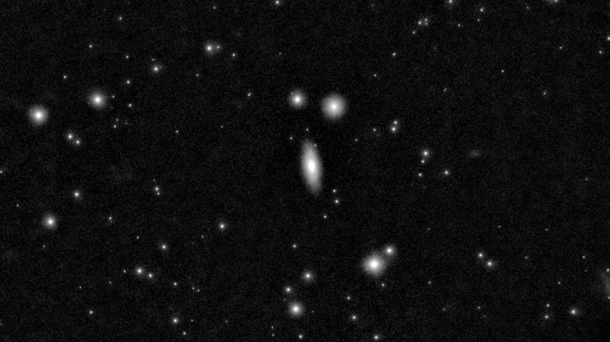
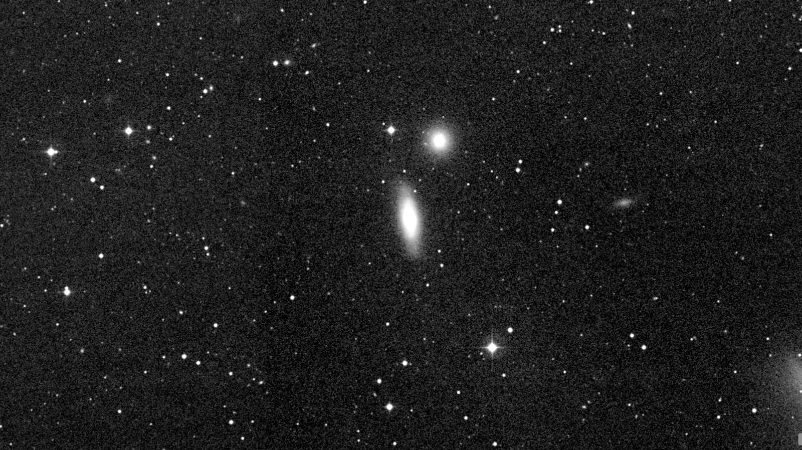

- Constellation
- Virgo
- Observed
- May 19, 2026
- Telescope
- Unistellar eVscope 2
See note
Probably nothing, but worth a second look. Fifty-seven stars matched the survey one for one.
One point in the field has no partner in the survey, and it is slightly drawn out rather than round. That is what an asteroid looks like when the telescope tracks the stars and the asteroid keeps moving. It lies away from the galaxy, close to the ecliptic, so an asteroid is the likely answer. The next image will tell.
The blink
Drag the slider or press Blink to compare my frame with the survey.


Survey images: Digitized Sky Survey (DSS2 Red), Space Telescope Science Institute / NASA, from the Palomar Oschin and UK Schmidt telescopes; displayed through the CDS Aladin HiPS service.